武汉的两个“纠结”
原文链接 备份链接 非常时期，武汉成了全国人民挂念、祈福的城市。封城后，武汉人民的真实生活是什么样？ 正和岛自1月26日起特别推出《叶青：我在武汉疫区的第N天》专栏。叶青是一位定居武汉40年的市民，也是一名学者和官员。接下来的一段时间，他 …


湖北·防疫生活口述故事系列（四）｜武汉篇
娱志号外特别报道组出品
文字｜三更、Moe、苏博
编辑｜四七
7
— — — —
口述者 三更
坐标 湖北省武汉市汉阳区
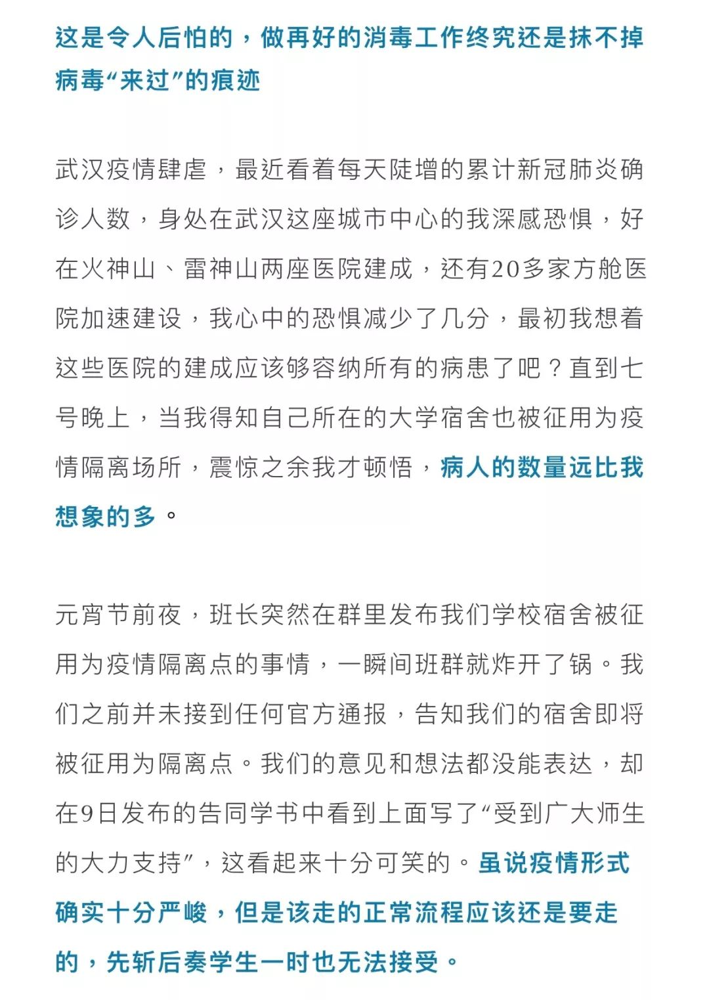

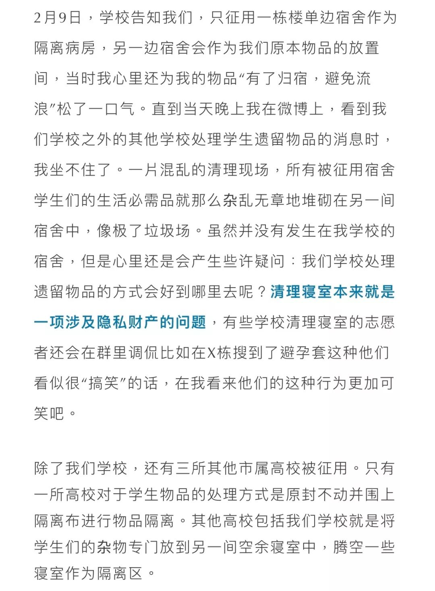

8
— — — —
口述者 Moe
坐标 湖北省武汉市洪山区
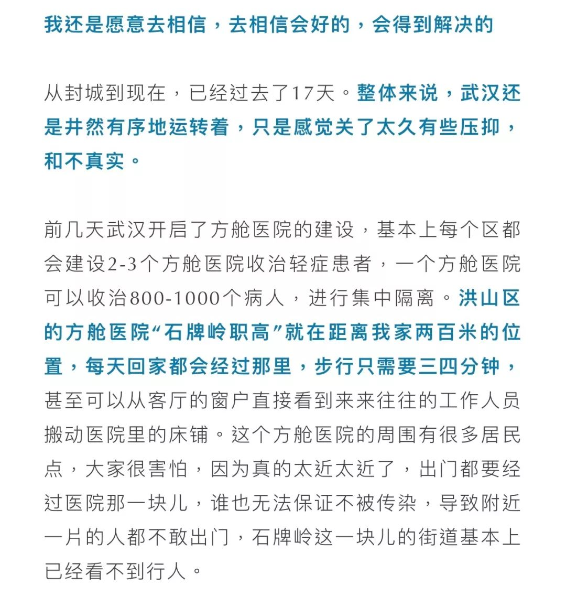

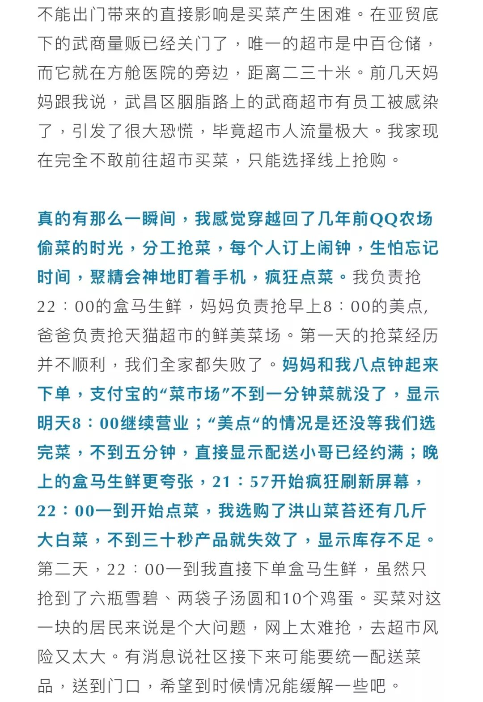

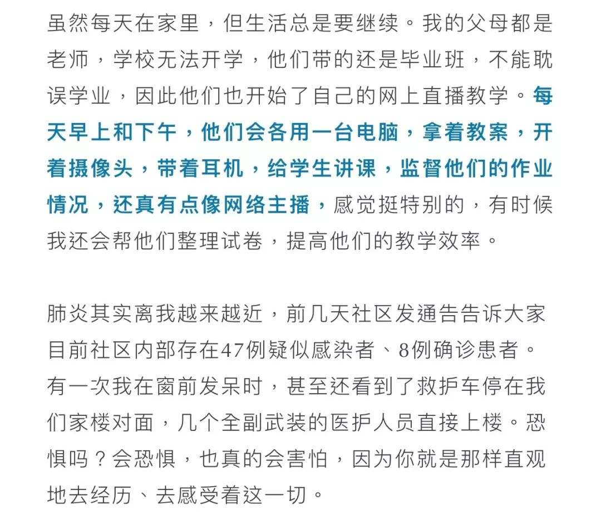

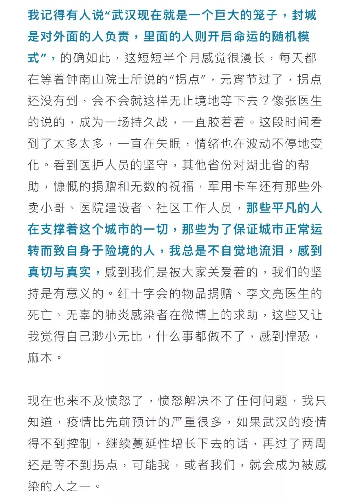
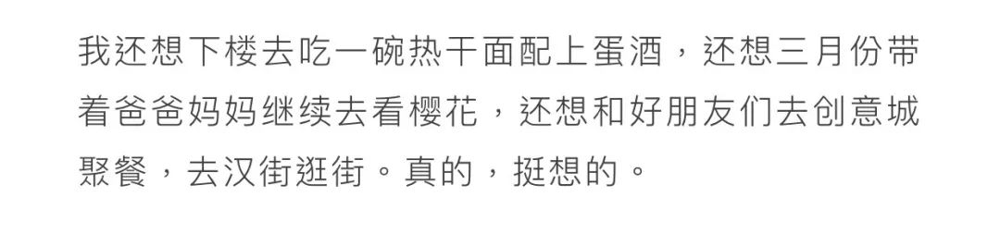
9
— — — —
口述者 苏博
坐标 湖北省武汉市江岸区


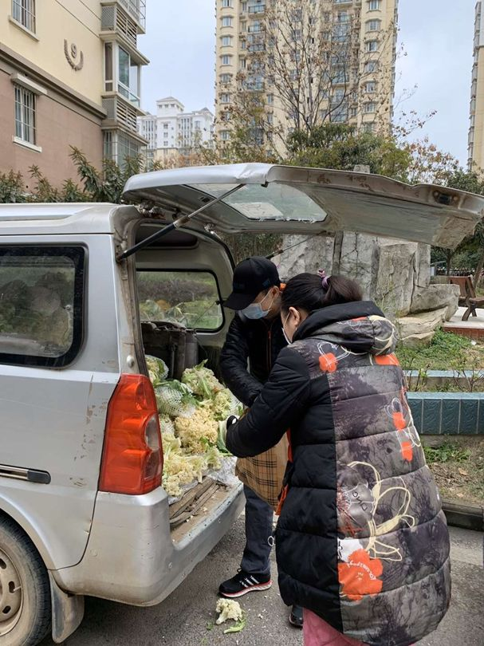
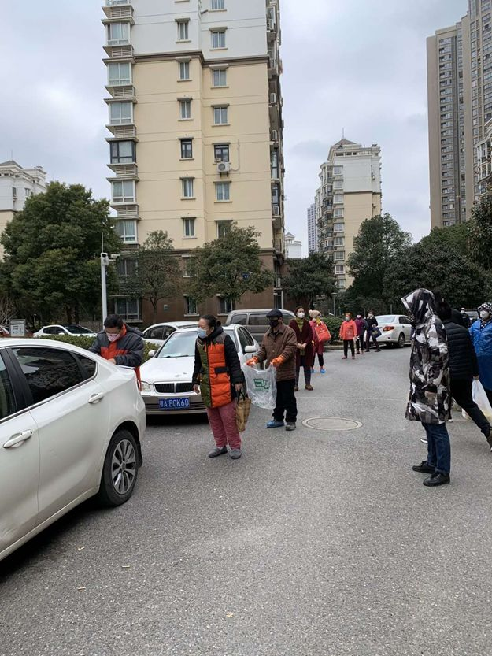
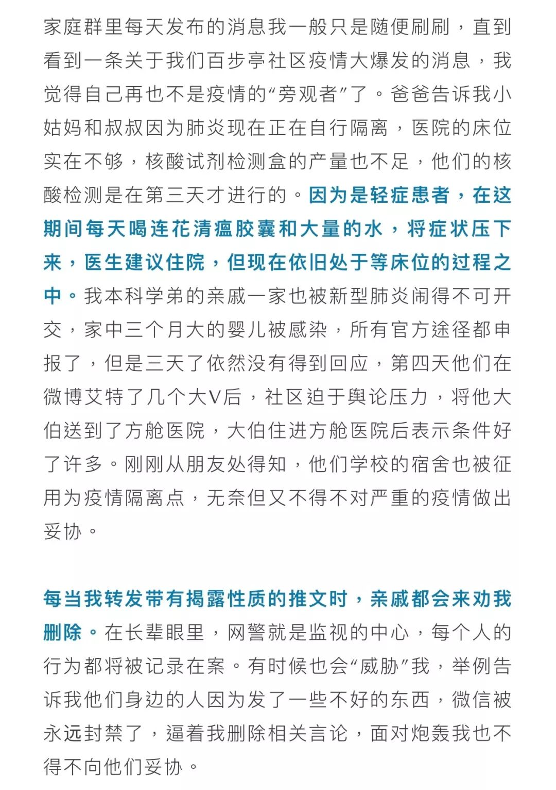

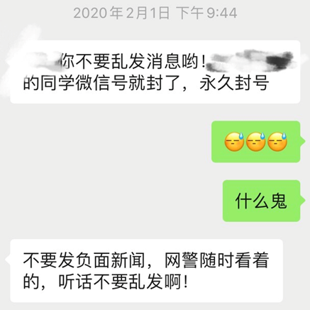
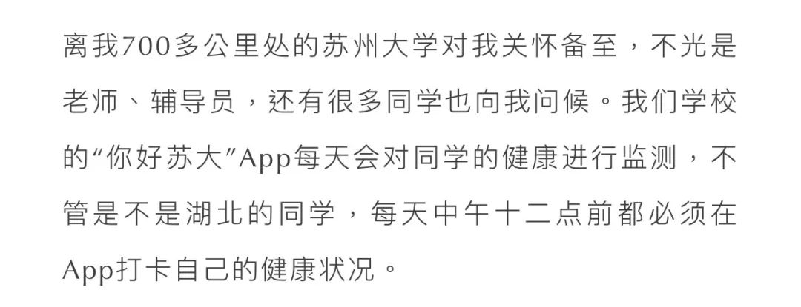


执行主编

--END–
指导老师｜吴畅畅
执行主编 | 拾贰、四七
美术总编 | 木羊
美编组 | 云起、鲸落、海岛、XIN、若芋
原文链接 备份链接 非常时期，武汉成了全国人民挂念、祈福的城市。封城后，武汉人民的真实生活是什么样？ 正和岛自1月26日起特别推出《叶青：我在武汉疫区的第N天》专栏。叶青是一位定居武汉40年的市民，也是一名学者和官员。接下来的一段时间，他 …
原文链接 备份链接 非常时期，武汉成了全国人民挂念、祈福的城市。封城后，武汉人民的真实生活是什么样？ 正和岛自1月26日起特别推出《叶青：我在武汉疫区的第N天》专栏。叶青是一位定居武汉40年的市民，也是一名学者和官员。接下来的一段时间，他 …
原文链接 备份链接 【财新网】（记者 张帆）2月8日，农历元宵节。 湖北省卫生健康委员会当日通报称，2月7日零时至24时，湖北省新增新型冠状病毒感染的肺炎病例2841例，新增死亡81例，新增出院298例。 新增病例中，武汉市1985 …
原文链接 备份链接 经济观察报 记者 饶贤君 连续多日，湖北省和武汉市红会的物资运筹效率备受质疑，2月4日，湖北省纪委监委通报，对省红十字会有关领导和干部在疫情防控期间接收和分配捐赠款物工作中存在的失职失责问题，予以严肃问责。 红十字会的 …
原文链接 备份链接 从1月23日“封城”到元宵节，已经过去整整17天。即使我每天忙于记日记，也觉得时间过得很快啊。 过去我要早起，6点起床，7点到办公室，不堵车。现在则是天天睡到自然醒，有点提前退休的感觉。虽然我还有两年上班的时间。 …